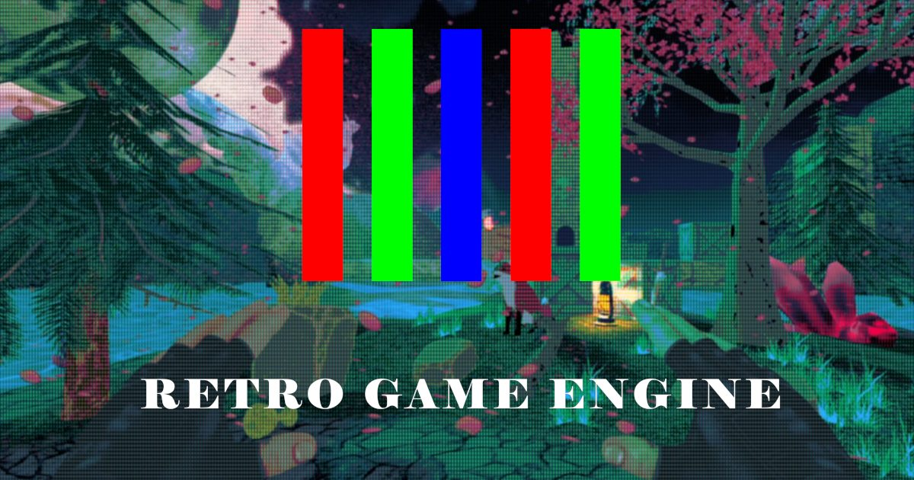

Personal engine · 2025–present
RetroEngine
My own DirectX 12 engine, written from scratch. It simulates the beam, the phosphors, and the glass of a real CRT instead of faking it with a filter. It's grown from a renderer into an engine with an editor, and there's a game being built inside it now.
- Stable 60 FPS on a Radeon 660M integrated GPU, before instancing or culling
- ECS, terrain streaming, shared-ownership texture cache
- ImGui editor with a live GPU memory debug panel